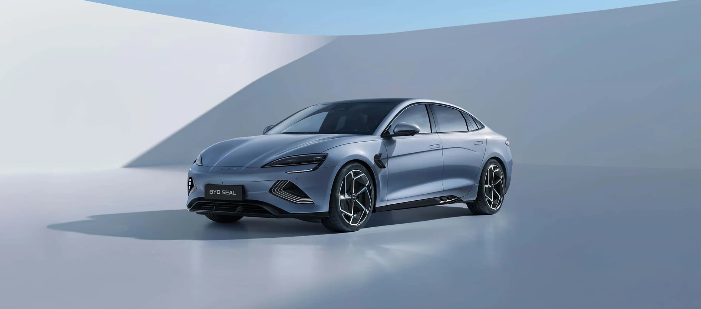

Carros

O BYD Seal é o primeiro modelo equipado com a inovadora tecnologia СТВ (Cell to Body) que integra a Bateria Blade à carroceria do carro, formando uma forte estrutura em "sanduíche", proporcionando uma notável rigidez torcional de 40.500 Nm/°. Com a tecnologia CTB, a Bateria Blade é mais que uma fonte de energia, é também um componente estrutural capaz de suportar forças significativas.
Voltar